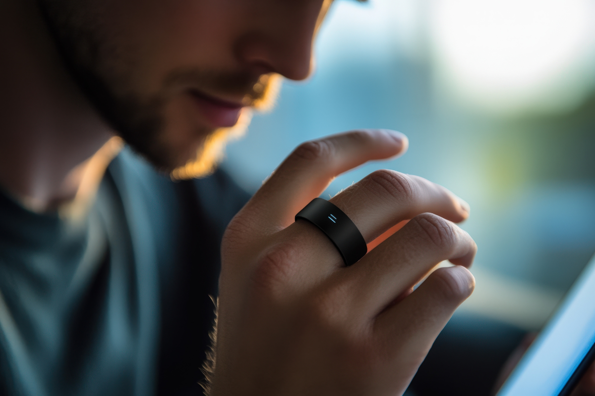

Binishaan Basnet on 1/13/2025
In today’s fast-paced world, where technology and convenience converge, smart wearables have taken a significant leap beyond traditional devices, introducing the sleek and innovative smart ring. Smart rings are the future of wearable technology that offer a unique style and a piece of technology imbedded inside them in a compact form. These devices are perfectly functional but also not to shiny which doesn’t make them an absolute center of attraction.
Smart rings are small, wearable devices designed to be worn on your finger. Despite their size, they are packed with features. In today’s date almost anything that a smartwatch is able to do can be done by using smart rings while occupying much less space. They can monitor health, track activities, send out notifications and alerts synced to your smartphone. The NFC technology can help for payments and access control
Smart Rings offers several exciting features that provide advantage over other wearables. Firstly, the compact size of the rings is a huge bonus to style addicts as it allows them to look classy and wear a piece of technology at the same time. Another feature of smart rings is that they have an amazingly long battery life. It is perfect for professionals or minimalists who prefer subtle tech.
{kind=link}